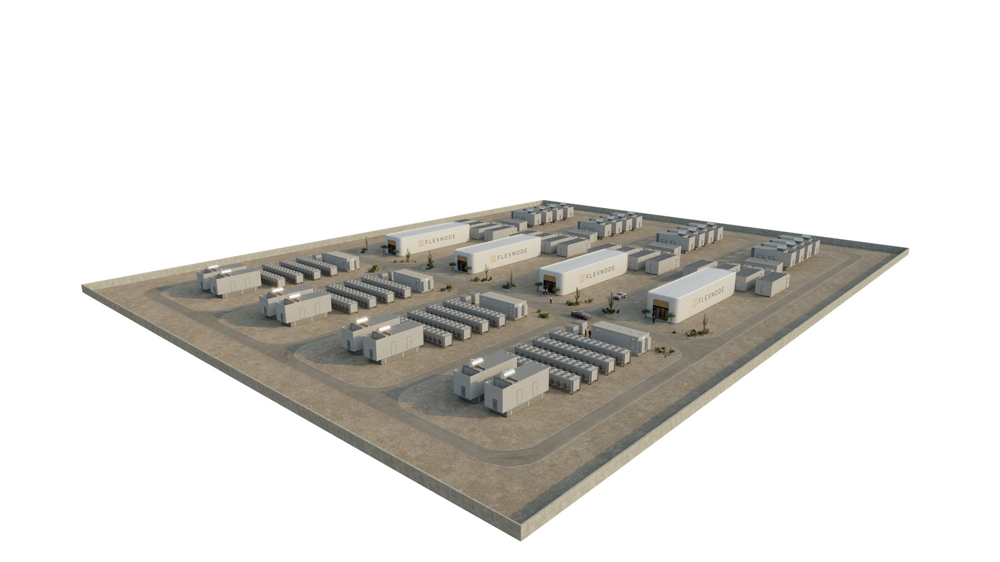

Deployment configurator
Design your deployment.
Six decisions. The site plan, footprint, density and schedule redraw as you go. You leave with a configuration code you can hand to us, or to your own engineer.
Rack densities are planning envelopes. Final selection follows the hardware roadmap.
Site layout
Linear suits long parcels and staged construction access. Compressed suits constrained urban lots and trades area for tighter service clearance.
Electrical redundancy
2N adds equipment yard area and a month of commissioning. Availability targets are set with your engineer, not chosen from a menu.
Indicative only. Final capacity, footprint, schedule and price depend on site, equipment, redundancy and scope.
A low score is information, not a rejection. Most projects start here and close the gaps in sequence.



- Utility interconnectionService capacity, tariff and the queue position sit with your utility. Flexnode qualifies what exists, and does not create power.
- PriceCost per MW is meaningless without a scope matrix. We issue budgetary estimates against a defined boundary, never a headline number.
- Availability tierRedundancy topology is an engineering outcome of your SLA and workload criticality, set with a reviewer.
- Approval outcomeWe map the approval path early and reduce late surprises. No one guarantees a permit.